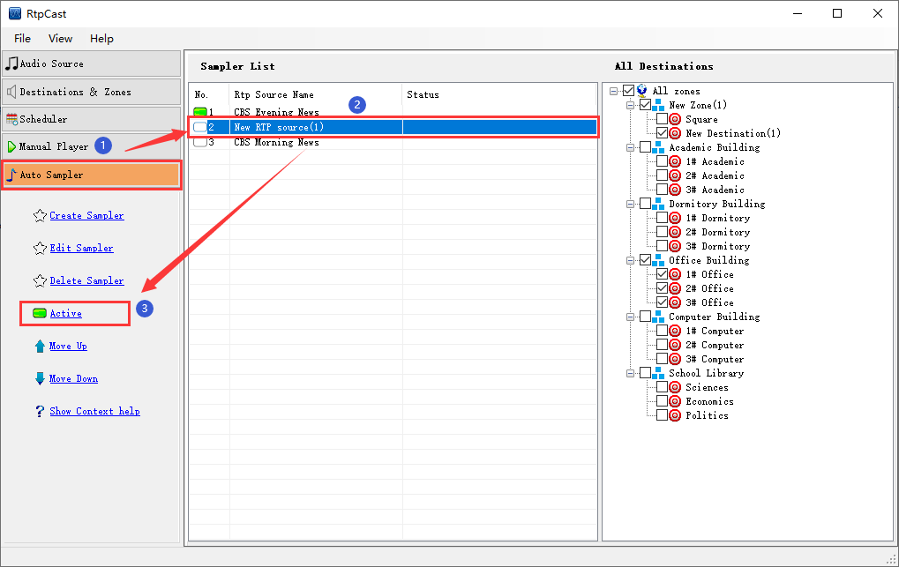

|  |
|
Introduction |
|
Activate or inactive the sampler. When the sampler is in the active state, the system will automatically transplate the audio stream to the destination. On the contrary, when it is in the inactive state, it will do not listen the sampler. |
|
Operation |
| (1) Active sampler: You select the inactive sampler in the sampler list (i.g.the icon on the left is a blank rectangular box " "), and then click the [Active]. At this time, the icon on the left changes to a green rectangular box " ", indicating that the sampler has been activated. |
| (2) Inactive sampler: You select the active sampler in the sampler list (i.g.the icon on the left is a green rectangular box " "), and then click the [Inactive]. At this time, the icon on the left changes to blank rectangular box " ", indicating that the sampler has been inactivated. |